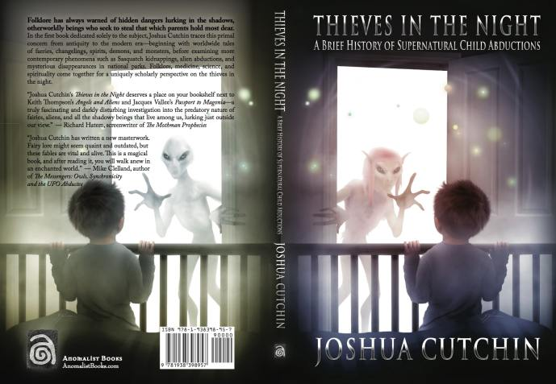

Why the strange parallels between "Missing-411" and fairy legends
Joshua Cutchin : Fairy Legends and Missing-411 Have Strange Similarities → Solve This Mystery

(Image source: https://anomalistbooks.com/book.cfm?id=100 )
Preface
- I have discussed this strange similarity in a previous article below.Past Articles
▼ click to expansion
Joshua Cutchin : Missing-411 cases and fairy legends have much in common. (2020-10-01)summary
・43:30 The similarities between the fairy legend and Missing-411 are as follows. - Fairies move in storms. (The weather turns stormy right after the Missing-411 incident.) - Dogs hate and fear fairies (hence police dogs do not try to track them.) - Victims' clothes are often brightly colored. - Incidents occur while searching for wild strawberries. - They are often found in granite areas. - Victims' consciousness is altered and they lose their sense of place, even though they are familiar with the area.Video(voice only)
Mike Clelland's Unseen: Mysteries of the Faerie Realm with Joshua Cutchin 2019-10-13 (2020-10-01)Excerpt
- Similarities - Bad weather - Megalithic surroundings - Collection of wild strawberries - missing persons found were in a daze.audio transcript
▼ click to expansion
37:12 but i think there are things that that are deserving of deserving of our attention and similarly you know 37:17 this this sort of uh sanitization that you find of fairy lore in the modern uh in the modern sort of 37:24 pop culture is one of the reasons that i think people haven't been uh considering it as a method or a means 37:31 rather to explain at least some of these missing 4-1-1 disappearances um 37:36 one of the things that you'll find that that is so i mean so i've said this before but i think it's worth saying again 37:41 missing 4-1-1 is a paranormal rorschach test whatever you're into is what you're going to see now honestly 37:48 i see the irony in me being into fairy lore and seeing fairies but hear me out um you know some of these data points 37:55 that don't seem to make as much sense like oh the idea that you know what's alien abduction because 38:00 aliens will abduct you well then why do so many disappearances have these weird weather effects why do 38:07 they take place near uh boulder fields why do they take place while berry picking but in the british and irish and 38:14 scottish fairy lore in particular you'll find other ideas around the world these are all things that are 38:20 incorporated into into fairy belief the idea that i mean there's there's a there's a book on my shelf that has an entire essay 38:26 dedicated to stories of children who uh go berry picking in newfoundland where 38:32 there was a strong fairy belief and either saw fairies at the berry bush were attempted to be kidnapped 38:38 were kidnapped and came back or came back in a daze which are all things that are missing 4-1-1 motif similarly 38:44 in iceland and other places in scandinavia boulder fields were the homes of fairies in a lot of these traditions from i mean 38:51 the native americans to the middle eastern cultures to the british isles fairies traveled on 38:59 storms they traveled on whirlwinds and this when you combine all this with the propensity of 39:04 these beings and a lot of these different cultures to steal people it's it's an explanation as out there as it sort of sounds here's 39:10 the thing i don't know what the fairy faith was describing 39:19 and i don't know what's happening in missing 4-1-1 but setting aside i think they're the same thing i don't 39:24 know that does this mean is josh saying that fairies are abducting people no i'm not i'm just saying that 39:30 this was their way of describing the missing 4-1-1 phenomena and our missing 4-1-1 phenomena is is our way of 39:35 describing the way that people would go missing in in fairyland and you can just go down the list i mean there's a really i sortVideo(1:01:15)
Joshua Cutchin | Well Known Fortean Researcher, Author and Musician - Phantoms & Monsters Radiomy opinion
- David Paulides does not emphasize "wild strawberry picking" as a characteristic of missing-411; David Paulides always mentions "bad weather, waterfront, and granite" as three characteristics. - Thus, Joshua Cutchin's discussion of the strange similarities between the fairy legends and Missing-411 are three points, all of which can be explained by the hypotheses in the previous articles below(*1). - Bad weather - Surrounding megaliths (granite) - The missing person who was found was in a daze.(*1)
This is WHY and HOW "Missing-411" had happened. My blog site: This is WHY and HOW "Missing-411" had happened. (2022-03-26)Thanks
- Translated with www.DeepL.com/Translator (free version) (2022-04-12)
First published
Joshua Cutchin : Fairy Legends and Missing-411 Have Strange Similarities → Solve This Mystery (2022-04-12)